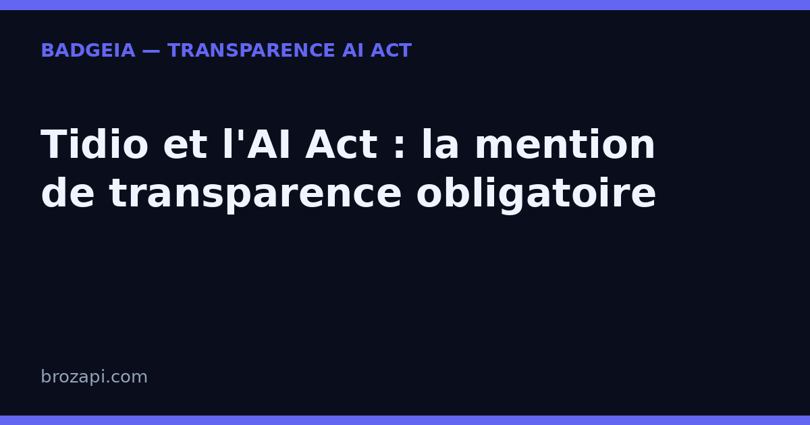

Tidio et l’AI Act : la mention de transparence obligatoire

Publié le · Mis à jour le 13 septembre 2026 · Lecture : 7 minutes
Réponse courte : si votre site utilise Tidio avec son agent IA Lyro, prévoyez une mention visible indiquant au visiteur qu’il échange avec une intelligence artificielle. L’article 50 de l’AI Act prévoit une information claire et distincte, au plus tard au début de la première interaction. Cette obligation est applicable depuis le 2 août 2026 selon le calendrier du règlement européen.
Ce guide explique pourquoi Lyro entre dans le sujet, quelle phrase afficher et quels réglages vérifier dans Tidio. Il s’agit d’une information générale, pas d’un conseil juridique.
Tidio et Lyro : de quel outil parle-t-on ?
Tidio est une plateforme de relation client qui rassemble un chat, une boîte de réception et des fonctions d’automatisation. Son agent Lyro utilise l’intelligence artificielle pour comprendre les questions des visiteurs et formuler des réponses à partir des contenus et indications fournis par l’entreprise. Tidio présente aussi des fonctions de transfert vers un membre de l’équipe lorsque l’agent ne peut pas traiter une demande.
Cette distinction est importante : un parcours strictement scripté et un agent qui génère une réponse ne fonctionnent pas de la même manière. Dans tous les cas, ne vous fiez pas uniquement au nom « Tidio » ou « Lyro ». La question pratique est simple : le visiteur peut-il croire qu’il échange avec une personne alors qu’une IA lui répond ? Si oui, rendez la nature de l’interlocuteur explicite.
Pourquoi l’article 50 de l’AI Act s’applique-t-il ?
L’article 50 du règlement (UE) 2024/1689 prévoit que les personnes qui interagissent directement avec un système d’IA doivent être informées de cette situation « de manière claire et distincte », au plus tard lors de la première interaction. Le texte vise donc la transparence de l’échange, et non le secteur d’activité, la taille de l’entreprise ou le prix de l’outil utilisé. Lire le texte consolidé sur EUR-Lex.
Lyro est présenté par Tidio comme un agent de service client fondé sur l’IA. Lorsqu’il répond à un visiteur depuis votre widget, l’interaction entre une personne et un système d’IA est donc le point à traiter. Le fait que Lyro s’appuie sur votre FAQ, votre site ou votre base de connaissances ne remplace pas la mention : une réponse fondée sur vos propres contenus reste une réponse produite par l’agent.
Le règlement ne vous impose pas cette formulation exacte : il impose un résultat de transparence. La phrase doit être compréhensible, suffisamment visible et placée au bon moment. Sur un site destiné à un public français, écrivez-la en français ; sur un site multilingue, prévoyez les langues réellement proposées aux visiteurs.
Que faut-il afficher dans un chat Tidio ?
Commencez par une phrase courte dans le premier message de Lyro. Elle doit nommer la nature artificielle de l’interlocuteur, sans laisser le visiteur la deviner. Vous pouvez partir de cet exemple :
Bonjour, je suis l’assistant virtuel de [nom de votre entreprise], basé sur l’IA. Je peux vous aider avec vos questions ; un membre de l’équipe peut prendre le relais si nécessaire.
Adaptez ce modèle à votre fonctionnement réel. Si aucun humain ne peut reprendre la conversation, ne le promettez pas. Si Lyro ne traite qu’un périmètre précis, indiquez-le. Une phrase honnête et compréhensible vaut mieux qu’une promesse générale difficile à tenir.
- Au premier contact : placez la mention dans la première bulle ou dans le message d’accueil affiché avant la réponse de Lyro ;
- Dans le widget : répétez si possible une indication courte, par exemple « Assistant virtuel IA », afin que l’information reste retrouvable pendant l’échange ;
- Dans les langues du site : vérifiez la version française et les autres versions proposées ;
- Dans votre suivi interne : conservez le texte, la date de mise en ligne et les pages concernées. C’est une bonne pratique de traçabilité, pas une preuve automatique de conformité.
Comment configurer Lyro avec une mention claire ?
Les intitulés peuvent évoluer dans l’interface Tidio. Vérifiez ces points dans votre projet plutôt que de suivre un chemin de menu figé :
- Ouvrez l’espace Lyro AI Agent. Tidio documente l’activation de Lyro et l’ajout de sources de données dans son centre d’aide officiel.
- Contrôlez le premier message. Ajoutez l’annonce « assistant virtuel basé sur l’IA » avant toute réponse automatisée. Relisez aussi les messages de démarrage ou les rôles proactifs si Lyro peut ouvrir la conversation seul.
- Vérifiez le nom et le ton. Un prénom ou un avatar très humain n’est pas un remplacement de la mention. Si vous personnalisez Lyro, gardez l’indication « assistant IA » immédiatement visible.
- Testez le transfert. Si vous annoncez qu’un humain peut prendre le relais, vérifiez que cette possibilité correspond bien à votre organisation et à vos horaires.
- Testez comme un visiteur. Ouvrez le site en navigation privée, sur mobile et dans chaque langue. Demandez à une personne extérieure à l’équipe ce qu’elle comprend dans les premières secondes.
Le centre d’aide de Tidio décrit notamment les sources de connaissances, les réglages de comportement, les canaux et le transfert vers des agents. Utilisez sa documentation pour confirmer les libellés actuels de votre interface.
Les erreurs fréquentes à éviter
Se contenter du logo Tidio
Le nom d’un éditeur ou d’une fonctionnalité ne signifie pas nécessairement « vous parlez à une IA ». Ajoutez une phrase explicite, compréhensible sans connaître Tidio.
Afficher la mention après la première réponse
Une mention cachée dans une page secondaire arrive trop tard si Lyro a déjà engagé l’échange. Faites-la apparaître dès l’ouverture ou avant la première réponse automatisée.
Promettre un humain sans vérifier
Le passage à un humain peut être utile, mais il doit correspondre à la réalité de votre support. Ne présentez pas cette possibilité comme disponible 24 h/24 si personne ne peut répondre à ces horaires.
Confondre transparence et garantie de réponse
Informer qu’un agent est une IA ne garantit ni l’exactitude de ses réponses, ni la conformité globale de votre site. Contrôlez aussi les données traitées, les informations affichées et vos autres obligations applicables.
FAQ : Tidio, Lyro et l’AI Act
Tidio est-il concerné dès que le widget est installé ?
Le point déterminant est l’interaction avec une fonction d’IA. Un widget de chat purement humain ne pose pas la même question que Lyro qui répond automatiquement. Faites l’inventaire des fonctions réellement actives sur chaque page.
La mention « assistant virtuel » suffit-elle ?
Elle est plus claire que le seul nom de marque, mais le contexte compte. « Assistant virtuel basé sur l’IA » est généralement plus explicite pour un visiteur qui découvre votre service. Vérifiez que la phrase est lisible et comprise lors d’un test réel.
Dois-je afficher un badge permanent ?
L’article 50 porte sur l’information au moment de l’interaction. Un badge permanent peut compléter cette information, notamment si plusieurs outils IA interviennent sur le site, mais il ne remplace pas nécessairement le message de bienvenue dans le chat.
BadgeIA fournit-il une garantie de conformité ?
Non. Le kit BadgeIA (39 €) est un outil technique d’aide à la transparence : il peut fournir un widget, un étiqueteur et une page de registre, mais il ne constitue ni un conseil juridique ni une garantie de conformité. Votre configuration et votre contexte restent à vérifier.
Vérifiez votre site en 30 secondes
Notre scanner gratuit détecte les chatbots et assistants IA présents sur une page, puis vérifie si une mention de transparence est visible. Il vous donne un premier diagnostic technique à compléter par une relecture de votre configuration Tidio :
Avant de conclure, testez toujours le parcours réel : première visite, première bulle, première réponse, affichage mobile et versions linguistiques.
Article informatif, ne constitue pas un conseil juridique. Les interfaces et fonctionnalités de Tidio peuvent évoluer ; vérifiez les réglages disponibles dans votre compte.
Sources consultées
- EUR-Lex — règlement (UE) 2024/1689, texte consolidé de l’AI Act
- Tidio — présentation officielle de Lyro AI Agent
- Tidio Help Center — Lyro, l’agent conversationnel
← Tous les guides · AI Act art. 50 : le guide complet · Chatbot IA : les mentions légales obligatoires
Derniers articles : Régulation IA en Europe : ce que l’AI Act impose déjà, malgré le « non » de Jensen Huang · Microsoft impose un code de conduite à ses IA : la transparence devient la norme · 5 000 $ d’amende pour des témoins inventés par ChatGPT : pourquoi votre PME doit vérifier chaque contenu IA · Suno v6 prouve que la transparence est devenue un argument de vente — et l'AI Act est derrière · Où vont vos données quand vous utilisez l'IA en Europe ? · OpenAI Astra et l’AI Act : la transparence devient obligatoire pour les PME